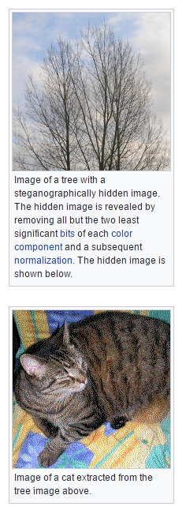
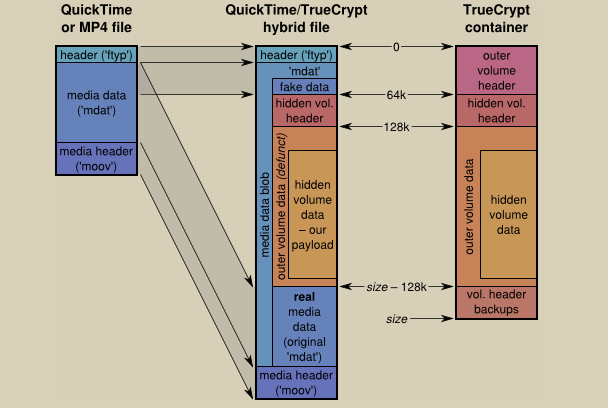

Passwords strategies for the semi-paranoid
The only good passwords are those you can't remember
Password managers to the rescue!
Online password managers
Storing your passwords with a 3rd party provider
Convenient for you
- One place
- Good integration
- Backups
- 2FA
- Local encryption/decryption
They're in business for this sole purpose
Convenient for hackers
- Client-side malware
- Court orders
- Large target for hacks
- Insiders
If it's on the web, somebody has access to it.
Conclusion
Pretty safe, but for the paranoid...????
Offline
Storing your password database yourself
Good for the paranoid
At the small expense of less convenience...
- Safe for paranoid levels 1 - 3000
- Customizable
- Open source
What in case of loss?
- Back up onsite
- Back up offsite
How to access on the go?
- Usb thumb drive
- 3rd party cloud sync
If it's on the web, somebody has access to it.
What in case of 3rd party access?
Multi-factor authentication
Make your master password more than a password
- Something you know
- Something you have
- Something you are
Yubikey
Something you have
- Static password
- TOTP
- Challenge/Response
- NFC
Yubikey
Simplest approach:
[password you know]
+
[long meaningless static password from yubikey]
**Pro tip**: keep copies of your Yubikey
Key Files
Something you have
- Regular file(s)
- Content must be kept secret
- Must provide key file to open password database
Veracrypt
Hide your password file
- Create encrypted file, store kdbx file in that
- Use multi-factor authentication
- Hide with steganography
Steganography

Steganography

Be paranoid, it's fun!
Determine your attack vectors
Don't forget